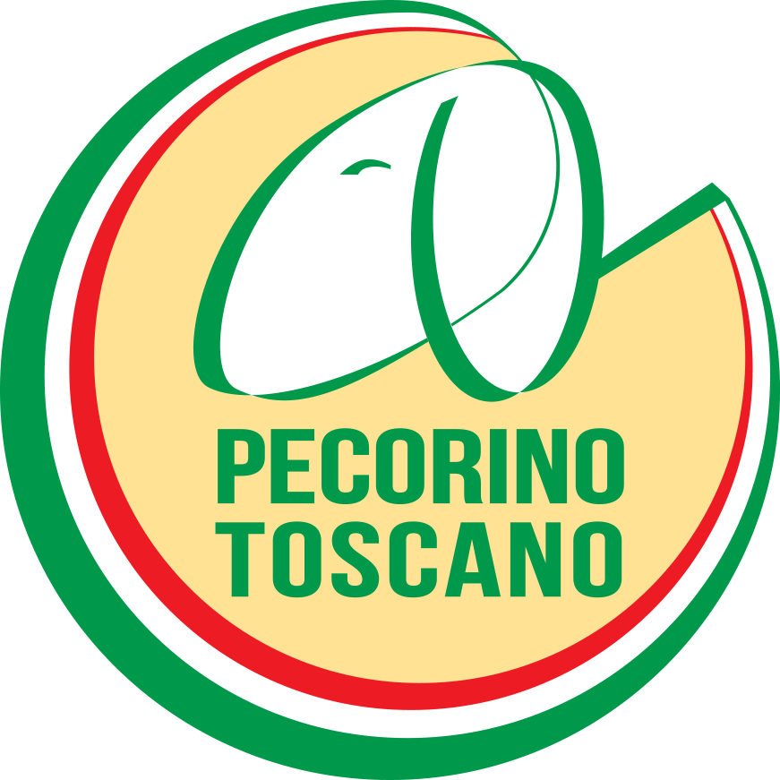

<!DOCTYPE html>
<html>
<head>
    
    <meta http-equiv="content-type" content="text/html; charset=UTF-8" />
    <script src="https://cdn.jsdelivr.net/npm/leaflet@1.9.3/dist/leaflet.js"></script>
    <script src="https://code.jquery.com/jquery-3.7.1.min.js"></script>
    <script src="https://cdn.jsdelivr.net/npm/bootstrap@5.2.2/dist/js/bootstrap.bundle.min.js"></script>
    <script src="https://cdnjs.cloudflare.com/ajax/libs/Leaflet.awesome-markers/2.0.2/leaflet.awesome-markers.js"></script>
    <link rel="stylesheet" href="https://cdn.jsdelivr.net/npm/leaflet@1.9.3/dist/leaflet.css"/>
    <link rel="stylesheet" href="https://cdn.jsdelivr.net/npm/bootstrap@5.2.2/dist/css/bootstrap.min.css"/>
    <link rel="stylesheet" href="https://netdna.bootstrapcdn.com/bootstrap/3.0.0/css/bootstrap-glyphicons.css"/>
    <link rel="stylesheet" href="https://cdn.jsdelivr.net/npm/@fortawesome/fontawesome-free@6.2.0/css/all.min.css"/>
    <link rel="stylesheet" href="https://cdnjs.cloudflare.com/ajax/libs/Leaflet.awesome-markers/2.0.2/leaflet.awesome-markers.css"/>
    <link rel="stylesheet" href="https://cdn.jsdelivr.net/gh/python-visualization/folium/folium/templates/leaflet.awesome.rotate.min.css"/>
    
            <meta name="viewport" content="width=device-width,
                initial-scale=1.0, maximum-scale=1.0, user-scalable=no" />
            <style>
                #map_f2b2f52279c409ec9924a3e25784232b {
                    position: relative;
                    width: 100.0%;
                    height: 100.0%;
                    left: 0.0%;
                    top: 0.0%;
                }
                .leaflet-container { font-size: 1rem; }
            </style>

            <style>html, body {
                width: 100%;
                height: 100%;
                margin: 0;
                padding: 0;
            }
            </style>

            <style>#map {
                position:absolute;
                top:0;
                bottom:0;
                right:0;
                left:0;
                }
            </style>

            <script>
                L_NO_TOUCH = false;
                L_DISABLE_3D = false;
            </script>

        
    <script src="https://cdn.jsdelivr.net/npm/leaflet-ant-path@1.1.2/dist/leaflet-ant-path.min.js"></script>
</head>
<body>
    
    
<style>
.glow-marker {
  width: 20px;
  height: 20px;
  background: cyan;
  border-radius: 50%;
  box-shadow: 0 0 10px cyan, 0 0 20px cyan;
  animation: pulse 1.5s infinite;
}
@keyframes pulse {
  0% { transform: scale(1); box-shadow: 0 0 5px cyan, 0 0 10px cyan; }
  50% { transform: scale(1.5); box-shadow: 0 0 15px cyan, 0 0 30px cyan; }
  100% { transform: scale(1); box-shadow: 0 0 5px cyan, 0 0 10px cyan; }
}
</style>
    
            <div class="folium-map" id="map_f2b2f52279c409ec9924a3e25784232b" ></div>
        
</body>
<script>
    
    
            var map_f2b2f52279c409ec9924a3e25784232b = L.map(
                "map_f2b2f52279c409ec9924a3e25784232b",
                {
                    center: [43.0, 11.0],
                    crs: L.CRS.EPSG3857,
                    ...{
  "zoom": 7,
  "zoomControl": true,
  "preferCanvas": false,
}

                }
            );

            

        
    
            var tile_layer_66aa79a39ae92ea62875d702bf6740a2 = L.tileLayer(
                "https://{s}.basemaps.cartocdn.com/dark_all/{z}/{x}/{y}{r}.png",
                {
  "minZoom": 0,
  "maxZoom": 20,
  "maxNativeZoom": 20,
  "noWrap": false,
  "attribution": "\u0026copy; \u003ca href=\"https://www.openstreetmap.org/copyright\"\u003eOpenStreetMap\u003c/a\u003e contributors \u0026copy; \u003ca href=\"https://carto.com/attributions\"\u003eCARTO\u003c/a\u003e",
  "subdomains": "abcd",
  "detectRetina": false,
  "tms": false,
  "opacity": 1,
}

            );
        
    
            tile_layer_66aa79a39ae92ea62875d702bf6740a2.addTo(map_f2b2f52279c409ec9924a3e25784232b);
        
    
            var marker_7b79414f0f829824291e37ae88641709 = L.marker(
                [43.715, 10.401],
                {
}
            ).addTo(map_f2b2f52279c409ec9924a3e25784232b);
        
    
            var div_icon_ce23f6acf45ae30d56d055590fc428ad = L.divIcon({
  "html": "\u003cdiv class=\"glow-marker\"\u003e\u003c/div\u003e",
  "className": "empty",
});
        
    
        var popup_5df83a6fa541f6c9a52e32dec579cc00 = L.popup({
  "maxWidth": 200,
});

        
            
                var html_f65e224fb4b4223070516a426f5d105a = $(`<div id="html_f65e224fb4b4223070516a426f5d105a" style="width: 100.0%; height: 100.0%;">     <div style="text-align:center;">         <h4 style="color: cyan;">PLAS_TEAM</h4>         <p style="color: white;">Researcher del progetto</p>              </div>     </div>`)[0];
                popup_5df83a6fa541f6c9a52e32dec579cc00.setContent(html_f65e224fb4b4223070516a426f5d105a);
            
        

        marker_7b79414f0f829824291e37ae88641709.bindPopup(popup_5df83a6fa541f6c9a52e32dec579cc00)
        ;

        
    
    
                marker_7b79414f0f829824291e37ae88641709.setIcon(div_icon_ce23f6acf45ae30d56d055590fc428ad);
            
    
            var marker_652fcc012b53455284d5aafb7cfa2446 = L.marker(
                [42.763, 11.113],
                {
}
            ).addTo(map_f2b2f52279c409ec9924a3e25784232b);
        
    
            var div_icon_32ec4899fc2080a6375a86b055494f58 = L.divIcon({
  "html": "\u003cdiv class=\"glow-marker\"\u003e\u003c/div\u003e",
  "className": "empty",
});
        
    
        var popup_4f99c5f882d70b05bef1763f5daa1233 = L.popup({
  "maxWidth": 200,
});

        
            
                var html_0b2b4d9aeea41c7ad091ef6956076386 = $(`<div id="html_0b2b4d9aeea41c7ad091ef6956076386" style="width: 100.0%; height: 100.0%;">     <div style="text-align:center;">         <h4 style="color: cyan;">Consorzio Pecorino Toscano DOP</h4>         <p style="color: white;">Consorzio di valorizzazione</p>              </div>     </div>`)[0];
                popup_4f99c5f882d70b05bef1763f5daa1233.setContent(html_0b2b4d9aeea41c7ad091ef6956076386);
            
        

        marker_652fcc012b53455284d5aafb7cfa2446.bindPopup(popup_4f99c5f882d70b05bef1763f5daa1233)
        ;

        
    
    
                marker_652fcc012b53455284d5aafb7cfa2446.setIcon(div_icon_32ec4899fc2080a6375a86b055494f58);
            
    
            var marker_7c74e57ec96e8278524b2691e56c7d29 = L.marker(
                [42.534, 11.504],
                {
}
            ).addTo(map_f2b2f52279c409ec9924a3e25784232b);
        
    
            var div_icon_e325aab5d5dd562623102dce8212bfe6 = L.divIcon({
  "html": "\u003cdiv class=\"glow-marker\"\u003e\u003c/div\u003e",
  "className": "empty",
});
        
    
        var popup_5d9808f44b49ecaee9e5d1fbb9546875 = L.popup({
  "maxWidth": 200,
});

        
            
                var html_eb9a1cf4b94597a681164f4a15ffbd71 = $(`<div id="html_eb9a1cf4b94597a681164f4a15ffbd71" style="width: 100.0%; height: 100.0%;">     <div style="text-align:center;">         <h4 style="color: cyan;">Caseificio Sociale di Manciano</h4>         <p style="color: white;">Produzione casearia locale</p>              </div>     </div>`)[0];
                popup_5d9808f44b49ecaee9e5d1fbb9546875.setContent(html_eb9a1cf4b94597a681164f4a15ffbd71);
            
        

        marker_7c74e57ec96e8278524b2691e56c7d29.bindPopup(popup_5d9808f44b49ecaee9e5d1fbb9546875)
        ;

        
    
    
                marker_7c74e57ec96e8278524b2691e56c7d29.setIcon(div_icon_e325aab5d5dd562623102dce8212bfe6);
            
    
            ant_path_c834ba58924be1bffb102c350bf8a8e1 = L.polyline.antPath(
              [[43.715, 10.401], [42.763, 11.113]],
              {
  "stroke": true,
  "color": "cyan",
  "weight": 3,
  "opacity": 0.8,
  "lineCap": "round",
  "lineJoin": "round",
  "dashArray": [
10,
20,
],
  "dashOffset": null,
  "fill": false,
  "fillColor": "cyan",
  "fillOpacity": 0.2,
  "fillRule": "evenodd",
  "bubblingMouseEvents": true,
  "smoothFactor": 1.0,
  "noClip": false,
  "paused": false,
  "reverse": false,
  "hardwareAcceleration": false,
  "delay": 1000,
  "pulseColor": "#FFFFFF",
}
        ).addTo(map_f2b2f52279c409ec9924a3e25784232b);
        
    
            ant_path_99a22465c3731cfd0c23571bbcc5d3b7 = L.polyline.antPath(
              [[42.763, 11.113], [42.534, 11.504]],
              {
  "stroke": true,
  "color": "cyan",
  "weight": 3,
  "opacity": 0.8,
  "lineCap": "round",
  "lineJoin": "round",
  "dashArray": [
10,
20,
],
  "dashOffset": null,
  "fill": false,
  "fillColor": "cyan",
  "fillOpacity": 0.2,
  "fillRule": "evenodd",
  "bubblingMouseEvents": true,
  "smoothFactor": 1.0,
  "noClip": false,
  "paused": false,
  "reverse": false,
  "hardwareAcceleration": false,
  "delay": 1000,
  "pulseColor": "#FFFFFF",
}
        ).addTo(map_f2b2f52279c409ec9924a3e25784232b);
        
    
            ant_path_cf64a13610e5a241bb68187e7bff8f0d = L.polyline.antPath(
              [[43.715, 10.401], [42.534, 11.504]],
              {
  "stroke": true,
  "color": "cyan",
  "weight": 3,
  "opacity": 0.8,
  "lineCap": "round",
  "lineJoin": "round",
  "dashArray": [
10,
20,
],
  "dashOffset": null,
  "fill": false,
  "fillColor": "cyan",
  "fillOpacity": 0.2,
  "fillRule": "evenodd",
  "bubblingMouseEvents": true,
  "smoothFactor": 1.0,
  "noClip": false,
  "paused": false,
  "reverse": false,
  "hardwareAcceleration": false,
  "delay": 1000,
  "pulseColor": "#FFFFFF",
}
        ).addTo(map_f2b2f52279c409ec9924a3e25784232b);
        
</script>
</html>